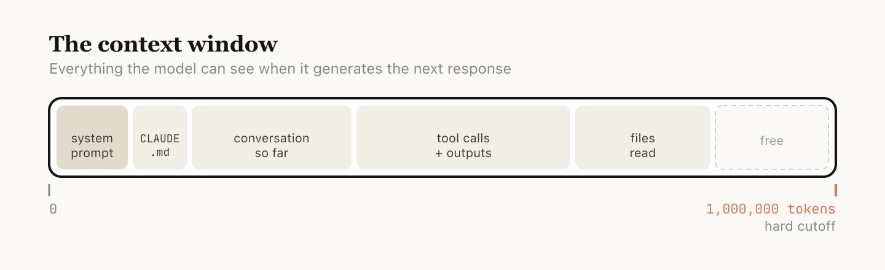

Claude Code Learning Journey
From your first conversation to building your first workflow
A multi-day onboarding guide for non-engineers & engineers alike.
From your first conversation to building your first workflow
A multi-day onboarding guide for non-engineers & engineers alike.
Day 1 builds understanding. Day 2 puts it into practice.
Like texting a friend who knows a lot — you ask a question and they'll give you an answer. But you have no idea how they got it.
You've installed Claude Code. Now what?
Day 1 covers three foundational levels — each one gives you more control over how Claude does its work.
Each level is a step up in how much you trust and structure the relationship.
Open your terminal and type claude. You're now in a conversation. Try typing:
Claude will answer — but how it answers is unpredictable. It might:
Every time you ask "what's the weather?", Claude might fetch data differently — or not fetch real data at all. There's no guarantee it uses the same source or method twice.
Prompting is perfectly fine for quick, one-off questions!
For consistent, reliable results, prompting alone isn't enough. You need more control.
An agent is Claude playing a specific role — like assigning a job title.
Without an agent, you walk into a random kitchen and shout "make me pasta!" — whoever hears you might boil instant noodles or make a five-course Italian meal.
You ask Claude "What's the weather in Dubai?"
It might check its training data, search the web, or make a best guess.
You don't know what it'll do.
A weather-agent has a clear job description:
"Always check the Open-Meteo API for Dubai. Always return the temperature in a specific format."
Same question, same approach, every time.
Here's what changes when you use an agent — using the weather-agent from this repo as a real example:
| Prompting | Agent | |
|---|---|---|
| Source | Could be anywhere | Always Open-Meteo API |
| Location | Whatever Claude picks | Always Dubai (lat: 25.2, lon: 55.3) |
| Format | Random paragraph | Clean temperature + unit |
| Consistency | Different every time | Same method, every time |
Agents give you predictability. Same question → same approach → same quality. Not smarter — consistent.
A skill is a specific capability that an agent (or Claude itself) can use — like a training manual for a new employee.
When someone joins your team, they have a role (agent), but they also go through specific training modules — how to use the CRM, how to write a proposal, how to run a standup. Each training module is a skill.
Shayan has many skills:
Each skill has its own knowledge and methods. Shayan uses the right skill for the right task. Claude works the same way.
The weather-agent is the person with the job title "Weather Reporter".
It defines the role and behavior.
The weather-fetcher skill is the specific training on how to fetch weather data.
It contains exact instructions:
One agent can have multiple skills, and one skill can be used by multiple agents. Skills are reusable building blocks. Agents are the people who use them.
Three levels, each adding more control over how Claude works.
| Level | What You Control | Best For |
|---|---|---|
| Prompting | The question | Quick one-off questions |
| Agents | The question + who answers | Repeatable tasks |
| Skills | The question + who answers + how they do it | Critical workflows |
You understand the three levels: Prompting, Agents, Skills.
Spend time at Level 1 — just prompt. Get comfortable asking Claude questions in the terminal. The more you use it, the more you'll notice tasks that would benefit from an agent.
Tomorrow: we build them.
Before building agents and skills, Claude needs to understand your project. That starts with CLAUDE.md.
When a new person joins your team, they don't just start working — they read the team wiki, the README, the onboarding doc. CLAUDE.md is that onboarding doc for Claude.

It's a markdown file at your project root that tells Claude:
Run /init in Claude Code to auto-generate a CLAUDE.md for your project.
Aim for under 200 lines. Files over 200 lines consume more context and may reduce adherence. Put detailed instructions in .claude/rules/ instead.
Claude Code uses two mechanisms to find CLAUDE.md files:
At startup, Claude walks upward from your current directory and loads every CLAUDE.md it finds.
Always loaded immediately.
CLAUDE.md files in subdirectories below you are loaded lazily — only when Claude reads files in those folders.
Loaded on demand.
For topic-specific instructions, use .claude/rules/*.md. Each rule file can target specific file patterns using # Glob: pattern at the top — they only load when Claude works with matching files.
Now that Claude knows your project, let's give it specialized capabilities.
A skill lives in .claude/skills/<name>/SKILL.md. It's a markdown file with YAML frontmatter.
The skill contains instructions, not code. It tells Claude how to do something using its existing tools (like WebFetch). Think of it as a recipe, not a program.
The YAML at the top of a SKILL.md controls how the skill behaves:
/slash-command. Defaults to directory name
false to hide from / menu — becomes background knowledge only
haiku, sonnet, or opus
fork to run in isolated subagent context
User-invocable: appears in / menu, user runs it directly. Agent-preloaded: set user-invocable: false, then list it in an agent's skills: field — it becomes domain knowledge injected into that agent.
An agent lives in .claude/agents/<name>.md. Same pattern — markdown with YAML frontmatter.
The agent has: a role (weather specialist), restricted tools (only WebFetch and Read), a preloaded skill (weather-fetcher), and a specific model (sonnet for cost efficiency).
The YAML at the top of an agent file controls its identity and capabilities:
"PROACTIVELY" for auto-invocation
haiku, sonnet, opus, or inherit (default)
user, project, or local
red, blue, green, etc.
| Agents | Skills | |
|---|---|---|
| Location | .claude/agents/*.md |
.claude/skills/*/SKILL.md |
| What it is | A role with behavior | Instructions for a task |
| Runs in | Its own isolated context | Inline or forked context |
| Has tools? | Yes — own tool allowlist | Uses parent's tools |
| Analogy | The employee | The training manual |
Once you've created an agent file, Claude can invoke it automatically (if the description says PROACTIVELY) or you can ask Claude to use it:
Behind the scenes, Claude calls the Agent tool:
You're the manager. You say "get me the weather." Claude dispatches the weather-agent (the specialist) into their own workspace. The agent uses their training (weather-fetcher skill) to do the work. They come back with the answer.
Commands are the entry points that tie agents and skills into complete workflows.
If agents are employees and skills are their training, a command is the manager's playbook — "when someone asks for a weather report, first ask them Celsius or Fahrenheit, then dispatch the weather team, then create the visual."
A command lives in .claude/commands/<name>.md:
Type /weather-orchestrator in Claude Code. The command orchestrates the entire workflow.
This is the core architecture pattern of Claude Code workflows:
The weather workflow demonstrates both skill patterns in a single flow:
weather-fetcher is listed in the agent's skills: field.
Its full content is injected into the agent's context at startup. The agent reads it like a reference manual.
weather-svg-creator is called directly by the command via the Skill tool.
It runs independently in the command's context, not inside any agent.
Today you learned how to build the pieces and wire them together:
| Component | Location | Purpose |
|---|---|---|
| CLAUDE.md | Project root | Project memory — tell Claude about your codebase |
| Rules | .claude/rules/*.md |
Conditional instructions triggered by file patterns |
| Skills | .claude/skills/*/SKILL.md |
Reusable instructions — the training manual |
| Agents | .claude/agents/*.md |
Specialists with roles, tools, and preloaded skills |
| Commands | .claude/commands/*.md |
Orchestrators that tie agents and skills into workflows |
Command (entry point) → Agent (specialist with skills) → Skill (reusable instructions). Each layer adds structure and predictability.
Day 1: Understand — Day 2: Build
You've gone from asking Claude a question to building a complete orchestrated workflow with agents, skills, and commands.
The learning journey continues — hooks, MCP servers, settings, and more.
github.com/shanraisshan/claude-code-best-practice